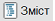
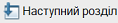
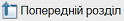

Цей посібник призначено для тих, хто тільки починає знайомитися з «Управлінням торговим підприємством». З його допомогою Ви зможете швидко освоїти основні прийоми роботи з продуктом і одразу приступити до роботи.
Посібник побудовано у вигляді наскрізного прикладу діяльності торгового підприємства. У тексті містяться докладні інструкції, послідовно виконуючи які, Ви зможете:
Наскрізний приклад виконується на пустій базі, створеній спеціально для навчання. Після цього створюється робоча інформаційна база, в якій відображається діяльність підприємства.
Список усіх розділів посібника відображається у лівій частині вікна. Для переходу до будь-якого розділу достатньо клацнути мишею по його назві. За замовчуванням список розділів відкритий, однак за кнопкою

Навіть якщо список розділів закрито, Ви можете перейти до наступного розділу за кнопкою

, або повернутися до попереднього за кнопкою
.Будь-який розділ можна роздрукувати за кнопкою із зображенням принтера в панелі інструментів програми (або комбінацією клавіш Ctrl+P, або вибором пункта меню Файл - Друк...).
ВАЖЛИВО. При опису торгівельних операцій зазначення пунктів меню наводиться відповідно до повного інтерфейсу програми.
Наступний розділ: "Заповнення відомостей про організації"